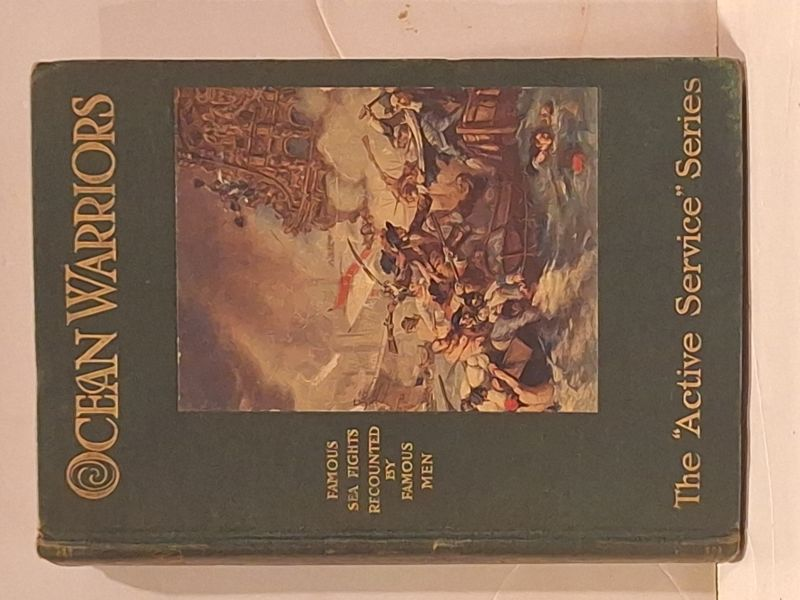

Ocean Warriors: A Book of Memorable Deeds Performed by British Seamen in Storm and Battle
anonymous compilation (The Active Service Series) · Thomas Nelson and Sons, London

C$28.0 · Good condition
Thomas Nelson and Sons, undated Edwardian-era hardcover in The 'Active Service' Series. Green cloth boards with mounted colour pictorial inset (a sea-fight scene) and gilt titling on spine and front board. Naval history compilation including Trafalgar and other British sea actions. Vancouver provenance: Mac's Magazine Mart bookseller stamp, 3660 West Fourth Avenue.
Details
- Publisher: Thomas Nelson and Sons, London
- Binding: Hardcover
- Edition: Active Service Series, undated (Edwardian, ca. 1900-1915)
- Condition: Good
- Category: Military